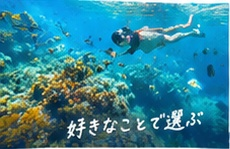
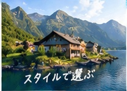
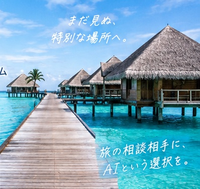

QARシステム
あるテーマについて利用者に質問し、その回答から提案をするシステムがQARです。
2000年頃に発案し、2002年にフロントにJavaアプレット、 バックエンドにPostgreSQLを使用して開発しました。
当時は、データを十分に準備することが難しく、 固定的な評価方法では利用者の多様な希望に対応できない部分もあり、 実用には至りませんでした。
AIを利用したQAR システムへ
その後20年以上が経ち、AI・LLMの発展によって、 当時考えていたQARを現在の技術で実現できるのではないかと考え、 AIを利用したQARとして再構築しました。
現在はJavaScript（Vue.js）、Flaskを使用し、 OpenAI・Gemini・Groqなど複数のLLMを利用できる構成としています。
しかし、現状では既存のWeb検索や一般的なAI利用との差別化が 十分にできているとは言えません。 そのため、独自LLM、RAGなどの活用や、さらなるカスタマイズを検討しながら、 QAR独自の推薦システムとして発展させることを目指しています。
利用イメージ
対話で見つける、あなただけの旅
漠然とした希望からでも大丈夫。いくつかの質問に答えることで、あなたの好みに合った旅先をAIが提案します。



QAR 2.0の流れ
海がきれい・1週間・ダイビング・シュノーケル・島でのんびり…など、思いつくまま入力。
QARが提示する質問に、選択・数値・自由文などで回答。
回答内容をもとに、AIが旅行先候補を提案。
候補の特徴や理由を見ながら比較。
気に入った旅先が見つかったら、旅行計画へ。
提案例（イメージ）
モルディブ
透明度の高い海と豊かな海中環境。ハウスリーフで毎日シュノーケル・ダイビングを楽しめます。
パラオ
ダイナミックな海中景観と豊富な海洋生物。ボートで多彩なポイントを巡るスタイルです。
フィリピンの離島
小さな島でのんびり過ごせる。シュノーケルとダイビングの両方を楽しめるスポットも豊富です。
QAR 2.0の特徴
曖昧な希望でも、質問への回答を通して条件を整理。
旅行先情報とAIの知識を組み合わせる方向で拡張。
数値だけでなく、分かりやすい説明を添えて提案。
システム構成
1. システムの目的
- 利用者の曖昧な希望から、適した旅行先を提案する
- 選択入力・数値入力・自由文などで入力負荷を下げる
- 内部では候補地評価を行い、画面では分かりやすく提案する
システム構成図
A. 利用者
PC・スマートフォンから利用
質問・選択などを入力し、推薦結果を画面で確認。
B. UI / フロントエンド
- 質問表示
- 選択 / 数値 / 自由文入力
- 推薦結果表示
C. アプリケーション層
- セッション管理
- 入力正規化
- プロンプト生成
- 推薦フロー制御
D. AI オーケストレーション
- 利用者入力の解釈
- 候補説明の生成
- モデル切替
自営LLMは開発中
E. 推薦エンジン
- 嗜好プロファイル
- 利用者絞り込み
- 内部スコア計算
- 比較候補生成
継続開発
H. ログ / 評価
- 対話履歴
- 利用者フィードバック
- LLM比較・改善
- API利用状況
G. 外部情報 / 拡張
- 航空便・参考運賃
- 天候 / 季節情報
- 地図 / 周辺情報
F. 知識・データ層
- 地域・海・季節
- 費用・雰囲気
- 体験 / アクティビティ
- Embedding
- FAISS
- 旅行情報検索
- 旧評価軸
- 旧方式との比較
2. 推薦処理の流れ
行きたい時期・エリア・予算・やりたいことなどを入力。
希望を整理するための質問を表示。
選択・数値・自由文などで回答。
収集した情報をもとに候補を評価。
候補を比較し、それぞれの特徴や理由を生成。
旅行先を分かりやすく表示。
現行版
- 複数LLMを切り替えて利用
- 質問・回答を使った推薦
- Google Cloud上で運用
現在開発中
- 自営LLMの活用
- RAG / 検索基盤の充実
- 旅行知識との連携強化
今後の発展
- 外部API連携
- 評価実験と精度改善
- より実用的な旅行推薦へ